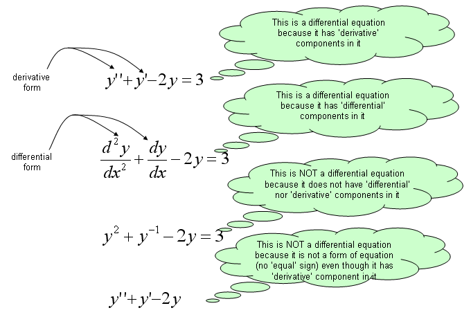
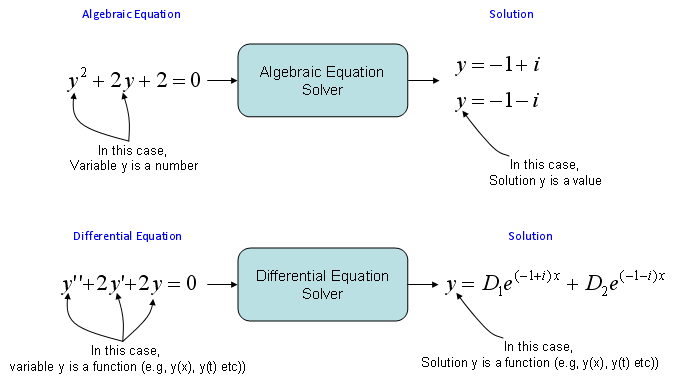
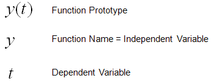
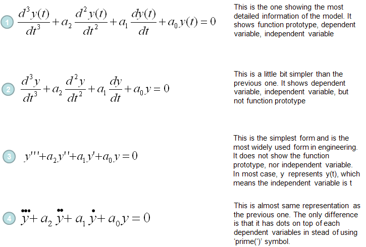
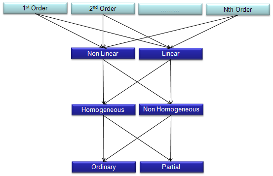
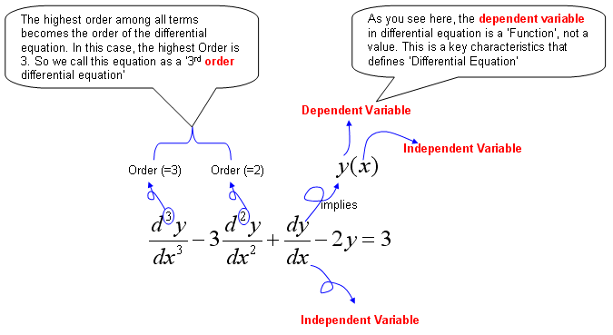
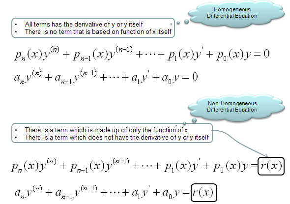
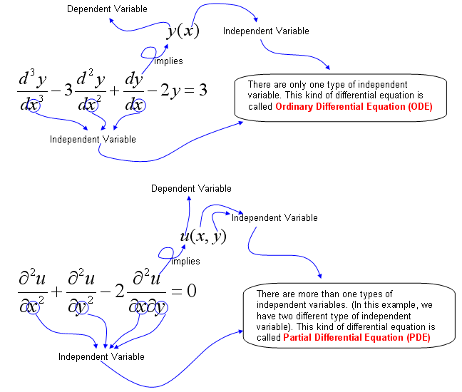

|
DE - Introduction Home : www.sharetechnote.com |
|
I would say to many of friends and juniors working in engineering area "If you are good at two topics, Matrix and Differential Equations, you would be good at ANY of the engineering field." Of course, just being good at math would not automatically lead you to success in the field, but we cannot deny the fact that mathematical understanding is very crucial in most of engineering. In this page, I would like to explain the basic concept of differential equation and it's applications as easy as I can do, but in some cases it is hard to avoid tackling the mathematical equations directly.
What is Differential Equation ?
Just rephrasing the questions itself, we can get the answer to this question from the question itself as follows.
Differential Equation is a kind of Equation that has a or more 'differential form' of components within it.
Somebody say as follows. (This is exactly same as stated above).
Differential equation is an equation that has derivatives in it.
As you see here, you only have to know the two keywords 'Equation' and 'Differential form (derivatives)'.
Let's think about the first keyword 'Equation'. What is an Equation ? You can find so many different type of definition of Equation from various text books and pages from internet. One of the definition/explanation that I found the best is from a math site for elementary school student (http://www.mathsisfun.com/algebra/equation-formula.html)
An equation says that two things are equal. It will have an equals sign "=" like this:
x + 2 = 6
That equations says: what is on the left (x + 2) is equal to what is on the right (6)
So an equation is like a statement "this equals that"
According to this definition, 3 + 5 = 8 type of statement is also an Equation. But this kind of equation is not much of our interest. The type of equation that we are interested is the equation that has one or more variables (unknown values) as shown in the definition above. For example, x + 2 = 6. 'x' is the unknown value in the equation. Solving the equation means 'finding the value for the variable' which satisfies the equation.
Now let's think about the second keyword, derivative (differential form). Unfortunately, you would not find such a nice definition as above from elementary school website because they don't learn it -:). So I would like to quote a definition from Wikipedia as follows. (http://en.wikipedia.org/wiki/Derivative)
the derivative is a measure of how a function changes as its input changes. Loosely speaking, a derivative can be thought of as how much one quantity is changing in response to changes in some other quantity; for example, the derivative of the position of a moving object with respect to time is the object's instantaneous velocity
Considering that derivative is expressed in the form of dy/dt or y' or df/dt, f'(t) etc. So differential equation can be described as any equation that contains components of dy/dt or y', y'', f'(t) etc.

Difference between Differential Equation and Algebraic Equation
I think you would know what is Algebaic Equation. You may not be able to explain exactly what it is, but I am pretty sure that you would have some intuitive understandings on what is the algebraic equation. One of the best way to learn a new area is to compare the new concept with the concepts which you are already familiar with.
Algebraic equation is to describe a relationship among multiple 'Numbers' and 'Finding the solutions' to an Algebraic equations is to 'find Numbers' that satisfy the equation. Differential equation is to describe a relationship among multiple 'Functions' and 'Finding the solutions' to a Differential equations is to 'find Functions' that satisfy the equation.



Terminology and Classification
One of the things that made me feel very confused (difficult) about the differential equation when I first read books were that there are so many different types of differential equations and I got confused with just those names, not to mention of solving the equations. After struggling for long time, I came out with a couple of criteria that helps me a little bit clearer understandings of classification as illustrated below. If you just follow the path from the top to the bottom, you would get all the possible types of differential equations.. at least those names -:)
For example, you can follow through these arrows and come up with followings
Why do we have to care about these classification and the confusing names ? Unfortunately there is no single method that can solve all different types of differential equations. If you see the text books, there is specific method for the specific types. This naming/classification would be very helpful for you to find proper method for those equations given to you.

Now let's look into the meaning of each word in this classification path.
'Order' of a differential equation is explained in the following illustration.

Homogeneous and Non-Homogeneous differential equations are defined as follows.

The difference between Ordinary differential equation and partial differential equation is explained in the following illustration.

Why we do the mathematical modeling ? It is to predict something based on the rules of changes of a system.
Here we have two important tems marked in red, "predict" and "rules of changes".
Let's think about the first term "predict". What is definition of "predict" ? Two definitions that I found in internet are as follows.
In plain terms, 'predict', 'prediction' is to figure out NOW something that will happen in the FUTURE.
For this kind of prediction, we need some 'information' or 'knowledge' ? To predict something without any information or knowledge is impossible at least in science and engineering area. (It may be possible to predict something without any background information in fortune telling, but it is not called 'science' or 'engineering).
Then what do you mean by 'information' or 'knowledge' ? Information (Knowledge) in this context is "rules of changes" for the things that we want to predict.
The "rules of changes" is given in most case in the form of "If something changes over time like this", "If something changes over space".
Now we have to critical terms to describe the background information for prediction i) changes over time ii) changes over space as you would know, if we just convert these statement into mathmatical form it becomes as follows i) changes over time = d (something)/dt ii) changes over space = d (something)/dx So the most of the prediction problem is given as follows. i) If d (something)/dt = an expression(description), what will happend to the 'something' in the future ? ii) If d (something)/dx = an expression(description), what will happend to the 'something' at the point which is far away from here ? If you just convert the statements above into a mathematical form, it is a differential equation. I hope you got my point now.
|